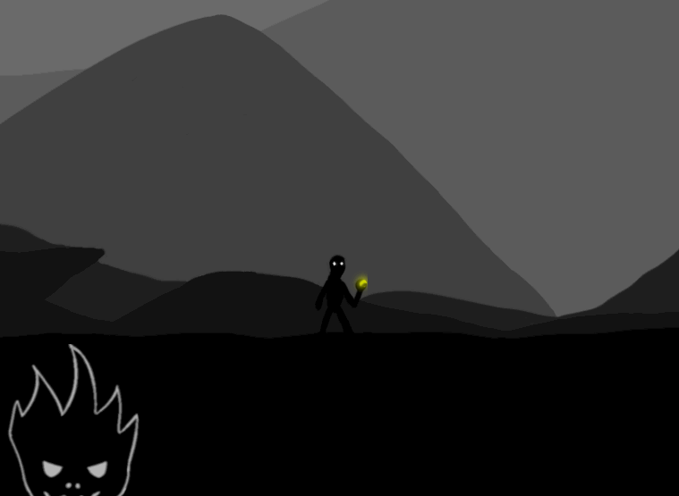
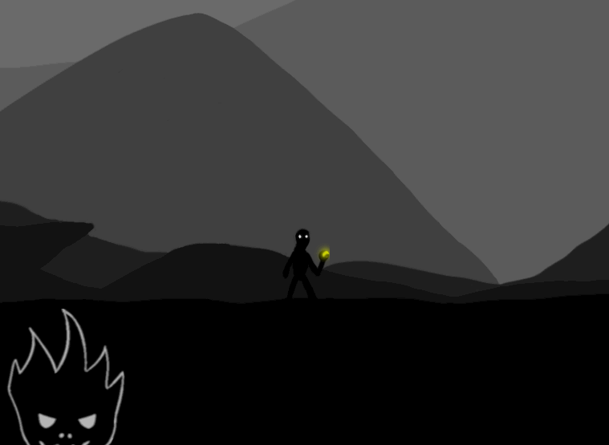

My Motivation
Kevin| 4 min read| November 28, 2022| [Devlog] #GameDevHistory Time
XNA used to be a popular game development environment made by Microsoft, used for games like Terraria, Bastion, Fez, Stardew Valley and many more. It was probably the main tool used by aspiring indie game developers back then, and even nowadays, developers use it or its many successors to make new games. However, XNA itself was announced to be discontinued almost exactly 10 years ago.
As one of the many wannabe game developers back then, I was looking for alternatives. To avoid wasting time on some proprietary technology again, I spent some time learning C++ and dove into OpenGL and Direct3D.
I had a blast and finished some tiny game jam entries.
 

My productivity tanked, but I had fun!
However, I thought playing around wouldn't bring me closer to my goals of making my own commercial games, so I switched to this new rising engine that most XNA refugees I knew were using. The Unity game engine. It was(and probably still is) the king of prototyping and cross-platform support. Working with it was blazingly fast. It locked some advanced features behind a paywall, but I thought I should stick with it to get paid doing what I love. Their pricing changed shortly after, making the entire engine essentially free(except for the dark mode..), and their new improved 2D workflow cemented my decision.
Chasing the fun
Even though it worked out, I was getting paid doing freelance game development work, something was missing. That Unity was kinda on a decline didn't help. I don't want to go into details, or bash the engine, it is still a perfectly valid choice and probably the best one for productivity and jobs. However, adding many(unfinished) features, some of which split the ecosystem, made working with it a drag. Things that used to be pretty much instantaneous, like opening a project or entering play mode, started to take a while. Stuff like that just took away the fun for me.
Meanwhile, I had some toy projects to distract me from the accumulating frustrations I had with Unity.
Nothing fancy, just a little renderer in C++ and now modern OpenGL.
(Did I mention that I am a weeb?)
I had fun!
I decided to save up some money to take a year off work, doing the cowards' version of "quitting your job to follow your dreams": The version where you are still available for previous clients or referrals, but are just not actively looking for new ones.
Ideally, I would finish some tiny games in my custom engine and hope to reach ramen-profitability(enough to pay my living expenses). If not, I could always go back to doing Webcrawlers in Unity(and other similar fun sounding stuff..). But at least I gave it a shot.
I could have made up countless arguments for being in control, moral reasons, learning experience, or just preservation, but ultimately, going with a custom engine just boils down to fun for me. Using the language and tools I like, with my preferred workflow, and actually understanding the interesting little details sounds like bliss.

(source: http://abstrusegoose.com/467)
As it happened, my journey got slightly delayed after listening to some random bearded man who converted me to the church of Rust on some online streaming platform.
Even though my endeavor got pushed back by a whole year, hyperinflation is imminent, writing a custom engine and open sourcing the games are not the best preconditions for a sustainable "business", I am finally going to take the jump and give it a try.
This devlog is just me logging my journey.